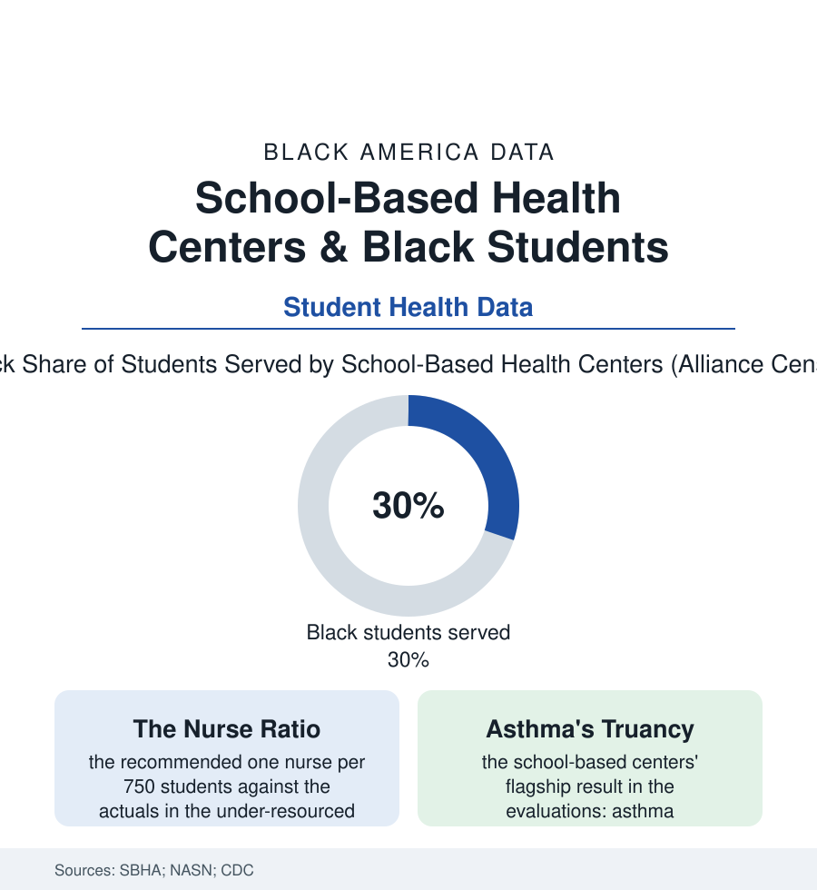

Black Education
The Clinic in the Schoolhouse: School-Based Health Centers and Black Students
Some 3,000 schools now house a health center — and their patients are disproportionately the students of this atlas. The school health file.

For millions of students, the most reliable doctor's office is the one down the hall from homeroom. The nation's roughly three thousand school-based health centers serve a student body that is disproportionately Black, Latino, and low-income — by design: the centers were built where the pediatric desert and the school map overlap. This article reads the school health file, where the education and public-health sections of this atlas share a roof.
The Model and Its Census
The school-based health center is a clinic with a school for a waiting room: primary care, dental chairs in the fullest models, behavioral health in the fastest-growing rows of the alliance's census, staffed by nurse practitioners and their teams, billing Medicaid for the covered and grant-funded for the rest, operating on the school day's hours inside the building the child already attends. Its founding logic is the access file's arithmetic — the appointment that requires no bus, no parent's missed shift, no insurance card hunt — and its census geography follows the need: the centers concentrated in the urban and high-poverty rural districts, their student panels running roughly a third Black in the alliance's counts, their host schools' free-lunch shares multiples of the national. Beside them stands the system's older and thinner layer, the school nurse — the profession's recommended ratio of one per 750 students a standard much of the map fails: the federal surveys finding roughly a quarter of schools with no nurse at all and many more sharing one across buildings, the shortages, predictably, the districts of this atlas's funding file — the nurse's office in those schools staffed by a health aide or a secretary with an ice pack, the asthmatic's action plan and the diabetic's insulin administered perforce by the trained-on-paper. The health data price the arrangement: the unmanaged asthma of the absence file (the condition among the leading causes of missed school in the CDC's counts — its burden, per the health section, twice-carried by Black children), the vision and dental problems presenting as behavior and grades (the screening file's children, three-quarters of whose referrals the follow-through data lose between the school letter and the specialist's chair — the loop the in-house clinic closes by existing).
What the Evaluations Show
The school-based center is among the more rigorously evaluated interventions in either of this atlas's health or education files, and its results hold a consistent shape: the asthma programs cutting emergency visits and hospitalizations among enrolled students in the flagship urban evaluations, the attendance effects real if modest (the health visit no longer costing the school day — the appointment at ten, the class at eleven), the adolescent health rows the most striking (the confidential services' uptake in the centers against the near-zero of the community clinics the teens won't enter; the mental-health visits becoming the centers' largest service line in the recent censuses — the counselor shortage file's stopgap, staffed), and the academic shadows the researchers trace carefully — the grade and promotion gains in the best-matched studies suggesting the clinic's education effects run through the attendance and the untreated-condition files, the child whose ears were checked learning to read in a quieter head. The model's expansion curve is the file's forward data: state funding lines growing in the recent sessions, the telehealth carts multiplying the rural reach (the hub clinician beamed to the nurse's office of the Black Belt school that could never recruit her), the Medicaid billing reforms deciding, state by state in the policy tables, whether the model scales or stalls. The opposition rows are mostly budgetary and jurisdictional; the centers' own constituencies — the parents of the attendance file, who rate them in the surveys among the school's most valued services — are the politics that keeps them funded.
Reading the School Health Data
The clinic in the schoolhouse is what the two halves of this atlas build when they cooperate: the health system's reach, delivered on the education system's attendance. Its census counts three thousand doors. The need that built them sits in forty thousand schools — and the gap between those numbers, measured in untreated asthma and unfilled glasses prescriptions, is the file's one necessary statistic.
More in Black Education
Black Educational Attainment: High School Parity, the College Gap
About 89 percent of Black adults hold a high school diploma and one in four holds a bachelor's degree or higher — the attainment ladder, the college completion gap, and the generational trend.
Historically Black Colleges and Universities: Enrollment and Degrees
More than 100 HBCUs enroll roughly 290,000 students and award about one in six Black bachelor's degrees — an outsized share from a small sector. The federal education data.
Black College Enrollment: 2.4 Million Students
About 2.4 million Black students are enrolled in American colleges — nearly two-thirds of them women. The NCES enrollment data by sector, level, and trend.
Source: School-Based Health Alliance census; National Association of School Nurses; Centers for Disease Control and Prevention school health data; National Center for Education Statistics.